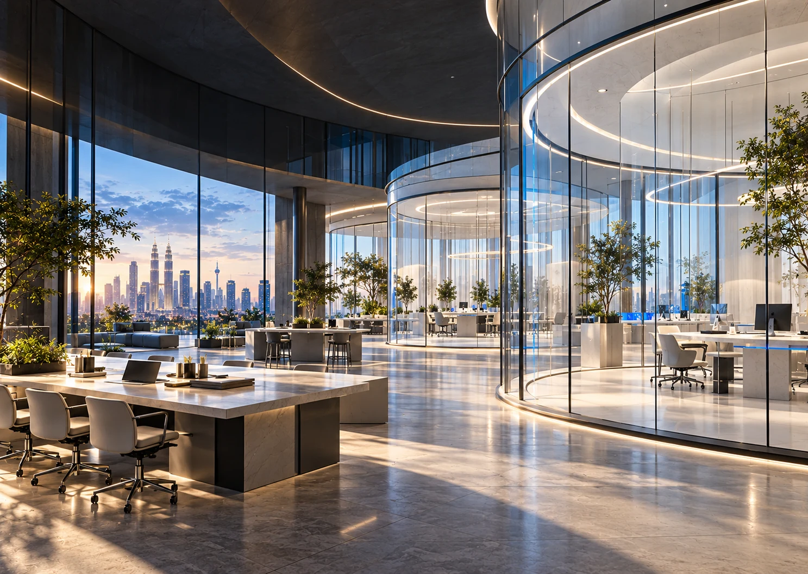

Business Innovation Laboratory
Ideas don’t grow.
They’re built.
Build your brand foundation, connect your operating systems, and find the community that will help you grow.
Enter the laboratory →
Open co.lab Growth OS →

Experiment chamber · Collaboration
Clarity is the catalyst.
Start with the audience, the problem, and the decision your team needs to make. Use them to define your positioning, message, and creative direction.
Continue to the systems lab →
Systems lab · Connection
Strategy in motion.
Connect your offer to the campaign, workflow, and customer records that support it. Agree on the evidence you’ll use to decide what to change.
The lab has four doors.
Ventures
Incubate or accelerate an admitted business or founder product.
Projects
Deliver a defined build with an agreed scope and an accountable owner.
Services
Develop your brand foundation, business structure, and marketing operations.
Community
Build creator, ambassador, influencer, and advisor relationships.
Work & evidence
Visit Work for client websites and case studies cleared for publication.
Open Work →
Co.MPASS
The Business Dashboard brings company evidence into context for founder decisions. Follow a published source in the public Atlas.
Explore public sources →
Launch chamber
Let’s build what’s next.
Tell us what you want to build, who it serves, and where you’re getting stuck.
Contact Last Bench →